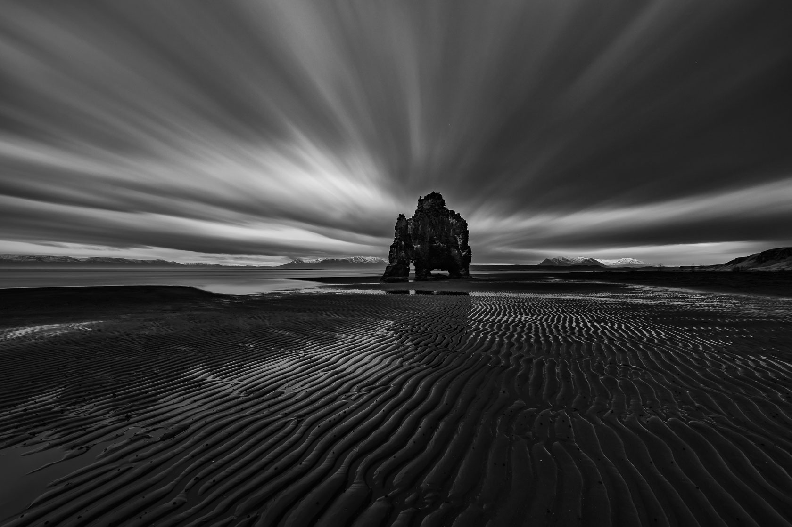
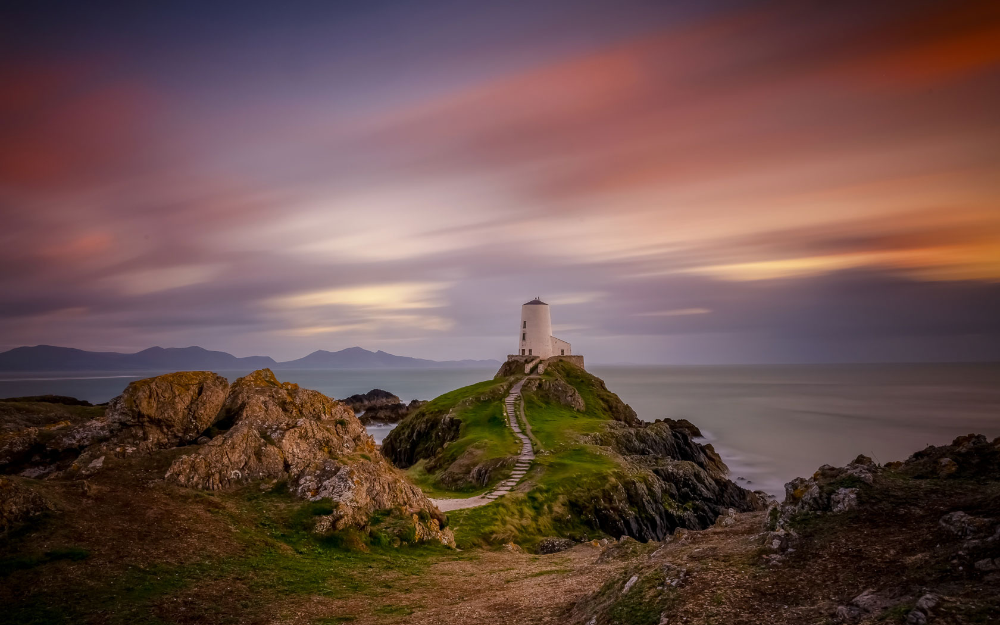

引言：云彩拉丝与极简主义
在摄影艺术领域，极简主义强调减法美学——去除多余元素，只保留最本质的视觉语言。而云彩拉丝技术通过长时间曝光，将动态的云层转化为流畅的线条，完美契合了极简主义对简洁、抽象和纯粹的追求。
15分钟的长曝光时间能够捕捉云彩的显著运动，创造出丝绸般流动的效果，同时保留静态元素（如建筑物、山脉或海洋）的清晰细节。这种动静结合的视觉表达，加上极简的构图和后期处理，能够创造出具有强烈情绪感染力的艺术作品。
所需器材
要实现15分钟的云彩拉丝效果，你需要以下核心设备：
- 相机：支持B门(Bulb) T门（Time）模式的相机，最好是全画幅相机以获得更好的动态范围
- 三脚架：极为稳定的三脚架是必不可少的，建议选择碳纤维材质以减少风的影响
- 超强ND滤镜：10档(ND1000)至16档(ND64000)的中性密度滤镜，以实现日间长曝光
- 快门线或遥控器：带有定时器功能的快门线，能够设置超过30秒的曝光
- 电池备份：长时间曝光会大量消耗电池，备用电池是必要的
- 各种镜头：广角镜头(16-35mm)适合大范围天空；长焦镜头(70-200mm)则适合压缩远处景物
极简主义设备选择
虽然设备清单看似庞大，但极简主义摄影的本质是"减法"。带上必要的器材，尽量减轻负担，让创作过程本身也秉持极简理念。一个变焦镜头通常比多个定焦镜头更符合极简思路。
拍摄计划与最佳时机
天气条件
云彩拉丝效果高度依赖于合适的天气条件：
- 适中的云量：30-70%的云层覆盖通常最为理想，能够在画面中创造出足够的动态元素
- 中速移动的云：太快或太慢的云层移动都不利于拉丝效果的展现
- 层积云或高积云：这些类型的云形态更容易形成流畅的拉丝效果
- 风速因素：地面风速15-25公里/小时通常意味着云层有适当的移动速度
最佳拍摄时间
虽然云彩拉丝可以全天拍摄，但以下时段最为理想：
- 日出前30分钟至日出后30分钟：朝霞为云层增添绚丽色彩
- 日落前30分钟至日落后30分钟：晚霞同样提供丰富的色彩
- 午后2-4点：如果追求极简黑白风格，强烈的日间光线可以提供高对比度
- 月光夜晚：满月附近的夜晚拍摄月光照射下的云彩，可创造出梦幻效果（需调整ISO，减少滤镜强度）
地点选择
极简云彩拉丝摄影的理想场景：
- 开阔视野：能够看到大片天空的地点
- 简洁前景：孤立的建筑、灯塔、树木或山脉
- 反射面：平静的湖泊或海面能增添画面层次
- 避免杂乱：选择干净、简约的场景，符合极简美学
天气预测工具
使用专业的云层预测工具如Windy、SkyCandy可以帮助规划拍摄。这些应用提供云层移动速度和方向的精确预报，是规划云彩拉丝摄影的绝佳助手。
相机设置与参数
成功捕捉云彩拉丝效果需要以下相机设置：
| 参数 |
推荐设置 |
说明 |
| 拍摄模式 |
T门(Time) |
允许超过30秒的长时间曝光，15分钟的曝光需要此模式 |
| 光圈 |
f/8 - f/11 |
提供最佳锐度和足够的景深，同时减少光线摄入 |
| ISO |
100（或最低原生ISO） |
降低噪点，尤其重要因为长曝光本身会增加噪点 |
| 白平衡 |
日光或阴天 |
保持自然色彩；如想要冷色调效果，可使用阴天白平衡 |
| 曝光时间 |
15分钟 |
需使用快门线定时器或遥控器设置 |
| 长曝光降噪 |
开启 |
虽会延长处理时间，但对减少长曝光产生的噪点至关重要 |
| 图像格式 |
RAW |
必须使用RAW以保留足够的编辑空间，尤其是突出云层细节 |
使用OWL ND CALC应用的詹姆斯高级计算模式轻松实现15分钟云彩拉丝效果：
- 确定您的目标曝光时间（15分钟云彩拉丝效果）
- 在应用中输入当前光线条件下的基础参数（如光圈、ISO）
- 选择"目标曝光时间"模式并输入15分钟
- 应用会智能分析并推荐最佳滤镜组合（例如"使用ND1000+ND64组合"或"单独使用ND32000"）
- 应用还会提供备选方案，如调整光圈值以达到相同效果（例如"使用ND1000并将光圈调整为f/16"）
詹姆斯计算器优势
与普通计算器不同，詹姆斯模式从您想要的效果出发，直接告诉您需要什么滤镜组合，无需反复试验不同参数。这在云彩拉丝这类需要精确长曝光时间的摄影中特别有价值，节省您宝贵的拍摄时间。
极简构图原则
极简云彩拉丝摄影的构图要遵循"少即是多"的理念：
负空间的运用
负空间（空白区域）在极简摄影中扮演着至关重要的角色：
- 让云彩的线条成为主角，周围留有足够的"呼吸空间"
- 避免画面过度拥挤，保持80/20法则（80%简洁背景，20%主体）
- 利用大片天空作为视觉重点，而非传统的地面元素
简化的前景和主体
极简云彩摄影中的地面元素选择：
- 选择形状简单、轮廓鲜明的单一主体
- 岸边的灯塔、孤立的树木、简洁的建筑轮廓都是理想选择
- 避免复杂的前景，如树丛、城市天际线或杂乱的风景
色彩最小化
控制画面中的色彩元素：
- 考虑单色摄影，黑白处理可以最大程度突出云彩的形态和线条
- 如保留彩色，则限制色彩范围在2-3种主色调内
- 蓝色和橙色（日出/日落）的互补色彩效果极佳
极简构图练习
拍摄前，尝试这个练习：用手机相机查看场景，但不急于拍摄。问自己："我能从这个场景中删除什么元素，而不损失其核心信息？"这种"减法思维"是极简摄影的精髓。
实战拍摄步骤
- 前期准备：
- 确保三脚架完全稳定，如有可能，悬挂重物于中央柱增加稳定性
- 关闭镜头和相机的防抖功能，在长曝光中可能造成模糊
- 检查电池电量，15分钟曝光会消耗大量电力
- 构图与对焦：
- 在不安装ND滤镜的情况下完成构图
- 使用实时取景放大对焦于前景主体
- 完成对焦后切换到手动对焦模式锁定
- 测试照片：
- 拍摄一张测试照片确认构图和曝光准确
- 检查直方图确保高光未过曝，暗部未欠曝
- 安装ND滤镜：
- 小心安装滤镜，避免改变对焦或相机位置
- 检查滤镜是否完全覆盖镜头，无暗角现象
- 圆磁吸滤镜比插入式方片要更适合超长时间曝光，不会漏光
- 设置曝光时间：
- 使用快门线或遥控器设置15分钟曝光时间
- 确认B门模式已激活
- 开始曝光：
- 锁定快门开始曝光
- 避免触碰相机或三脚架
- 观察云层移动，预估最终效果
- 等待并监控：
- 15分钟等待期间，持续监控场景变化
- 注意突发状况，如云层突然消散或更多云层进入
- 降噪过程：
- 曝光结束后，如启用长曝光降噪，相机将花费额外时间处理图像
- 此过程可能需要额外15分钟，耐心等待
极简风格后期处理
极简云彩拉丝照片的后期处理应该遵循"减法"原则，注重突出云彩的线条和形态：
基础调整
- 精确曝光调整：确保云彩细节清晰可见，同时保留足够的暗部细节
- 对比度增强：适当提高对比度以增强云彩条纹的视觉冲击力
- 降噪处理：细致降噪，特别关注暗部区域
- 镜头校正：移除畸变和暗角，除非这些效果是设计的一部分
色彩处理
- 黑白转换：考虑黑白处理以强调形式和线条
- 如保留彩色：
- 降低饱和度，创造淡雅效果
- 使用HSL面板精确控制各色相的饱和度和亮度
- 考虑拆分色调，为高光和阴影赋予互补色
局部调整
- 渐变滤镜：使用渐变滤镜分别调整天空和地面
- 局部对比度：在云层区域适当增加局部对比度，强调纹理
- 锐化：选择性锐化静态元素，避免过度锐化云彩
最终润色
- 裁剪：重新考虑构图，移除不必要的元素
- 克隆和修复：移除可能分散注意力的小瑕疵或传感器尘点
- 轻微晕影：考虑添加微妙的晕影引导视线
极简后期处理原则
完成后期编辑后，暂时存储文件，第二天再查看。问自己："还有什么元素可以简化或移除？"通常，我们第一次编辑会过度处理。极简主义要求我们敢于放弃那些不必要的调整。
作品案例解析
让我们分析两张不同风格的云彩拉丝长曝光作品：
案例1：极简黑白犀牛石

技术参数：
- 相机：Nikon D850
- 镜头：NIKKOR 14-24mm f/2.8
- 光圈：f/8
- 曝光时间：5分10秒
- ISO：100
- 滤镜：卡色金刚狼 (10档) + (6档)
风格分析：这张照片采用极简的黑白处理，犀牛石作为画面中唯一的视觉元素与竖直流动的滩涂形成强烈对比。云层的长时间曝光创造出从上向下的流畅条纹，与静止的犀牛石和滩涂形成动静结合的视觉张力。黑白处理突出形式和纹理，消除了可能分散注意力的色彩元素。画面中大量留白（滩涂和天空）符合极简主义的"少即是多"理念。
案例2：彩色极简日落灯塔

技术参数：
- 相机：Nikon D850
- 镜头：镜头：NIKKOR 24-70mm f/2.8
- 光圈：f/11
- 曝光时间：208秒
- ISO：100
- 滤镜：Kase ND1000(10档)
风格分析：与第一张作品不同，这张照片保留了日落的暖色调，创造出蓝橙互补色的和谐效果。小路蜿蜒到灯塔，与上方流动的金色云彩形成鲜明对比。画面色彩仅限于蓝色和橙色两种互补色，尽管是彩色照片，仍保持了极简的色彩方案。长曝光捕捉了云层缓慢的东西向移动，创造出丝绸般的质感，灯塔则作为画面锚点，提供稳定感。
总结
云彩拉丝长曝光技术结合极简主义美学，为摄影师提供了一种表达天空动态之美的独特方式。通过几分钟的长时间曝光，我们能够捕捉肉眼不可见的云层运动，展现自然中抽象而流畅的一面。
关键要点回顾：
- 高强度ND滤镜(10-16档)是实现日间长曝光的必备工具
- 极简构图强调"减法"原则，保留必要元素，去除干扰
- 天气和云层状况是成功的关键，使用天气预报工具规划拍摄
- 稳定的三脚架和遥控快门线是清晰拍摄的基础
- 后期处理应延续极简理念，控制色彩和对比度
- 猫头鹰OWL ND CALC应用可以精确计算所需的滤镜组合和曝光时间
云彩拉丝摄影需要耐心和实验精神。每次拍摄都是独一无二的，因为云层永远不会以相同的方式移动。正是这种不可预测性，加上极简主义的表达方式，使这种摄影技术如此令人着迷。